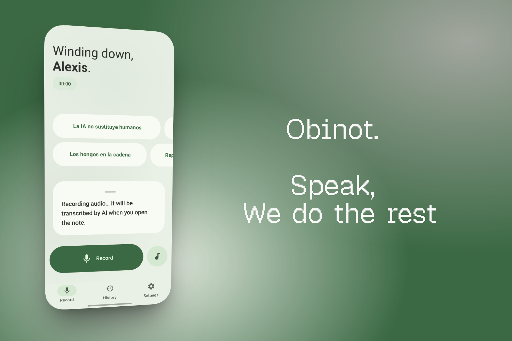
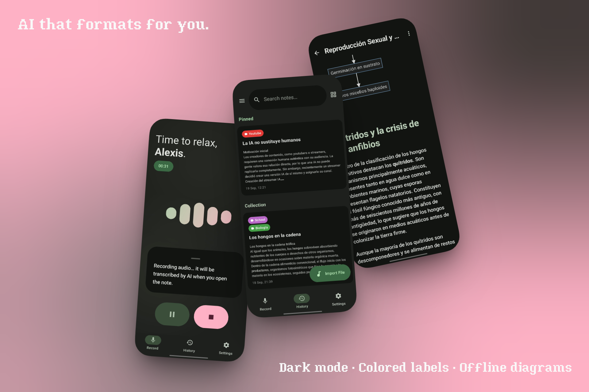

Voice capture
Fast mode for on-device transcription or Accurate mode for full audio + AI transcription. Background recording with live waveform.
No friction between thought and note. Hit record, talk, done.
Fast mode for on-device transcription or Accurate mode for full audio + AI transcription. Background recording with live waveform.
Bring your own Gemini or Groq API key. Dynamic mode routes tasks across providers to stretch free quotas.
Headers, tables, code blocks. Native LaTeX via RaTeX (offline, no WebView). Mermaid diagrams rendered with one tap.
Long-press the menu to ask follow-up questions about any note. Conversation saves with the note itself.
Notes, audio, and settings live on your device. No account. No telemetry. AI features call your provider directly with your key.
Spring physics on every button, animated bouncy components, wavy audio progress bar, 7 color palettes, dark + AMOLED themes.


Obinot is a community fork of Binot by DENSLnetion. Your data moves with you — both apps can read each other's files.
.binotbak file